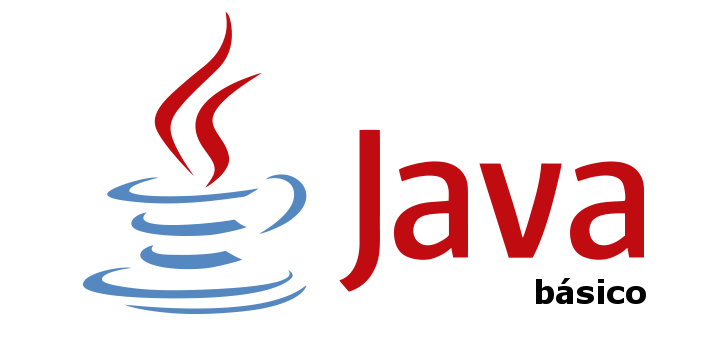
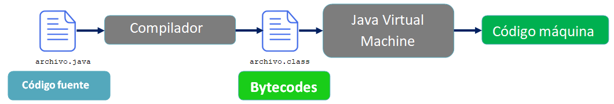
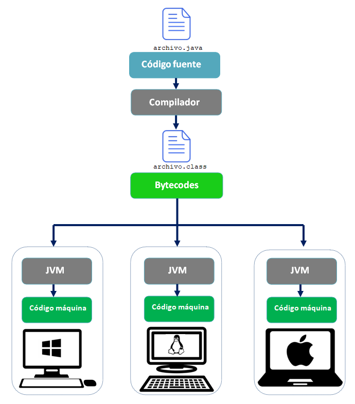

Conociendo más sobre Java...
Java es un lenguaje de programación que se popularizó a partir del lanzamiento de su primera versión comercial de amplia difusión, la JDK 1.0 en 1996. Actualmente es uno de los lenguajes más usados para la programación en todo el mundo.

MÁQUINA VIRTUAL JAVA (JAVA VIRTUAL MACHINE O JVM). COMPILADOR E INTÉRPRETE. BYTECODE.
El primer concepto a abordar es el de compilación. Como ya hemos visto en apartados anteriores, “compilar” significa traducir el código escrito en “lenguaje entendible por humanos” a un código en “lenguaje máquina”, que entienden las máquinas, pero no entendemos nosotros.
Los programas Java no se ejecutan en nuestra máquina real (en nuestro ordenador o servidor) sino que se simula una “máquina virtual” con su propio hardware y sistema operativo. En resumen, el proceso respecto a lo que vimos se amplía en un paso: del código fuente se pasa a un código intermedio denominado habitualmente “bytecode” entendible por la máquina virtual Java. Y es esta máquina virtual simulada denominada Java Virtual Machine -o JVM- la encargada de interpretar el bytecode dando lugar a la ejecución del programa.

Esto permite que un programa escrito en Java pueda ejecutarse en una máquina con el Sistema Operativo MacOS, Windows, Linux o cualquier otro, porque en realidad no va a ejecutarse en ninguno de los sistemas operativos, sino en su propia máquina virtual.

Como ya vimos en apartados anteriores, los archivos que se encargan de ejecutar estas tareas son:
- El compilador --- > javac. Se encarga de compilar el código fuente y crear el archivo .class.
- El intérprete --- > java. Se encarga de interpretar y ejecutar los archivos .class (bytecode).